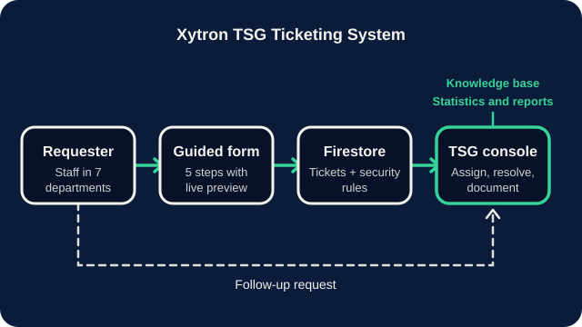
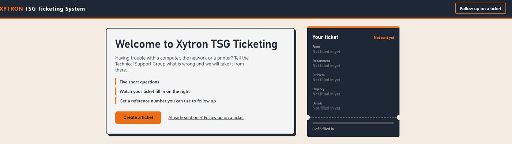
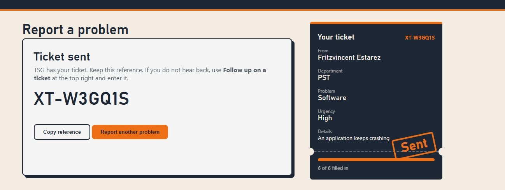
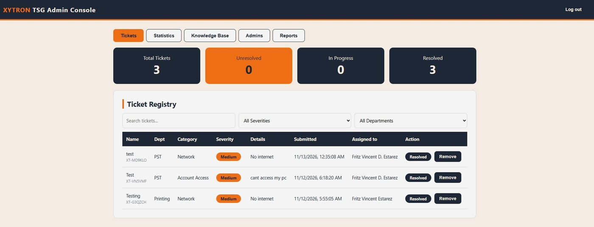
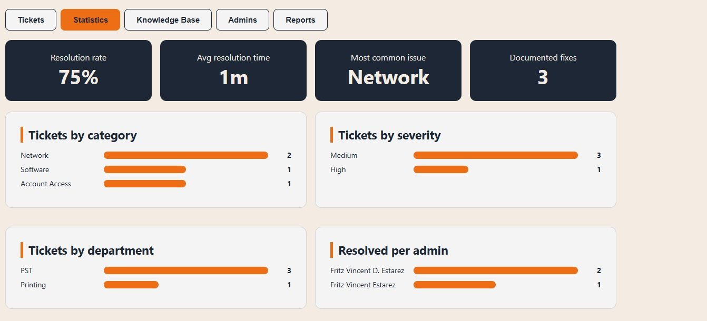

Xytron TSG Ticketing System
A helpdesk for a seven-department company: a guided ticket form, an admin console, a troubleshooting knowledge base and printable reports.
Overview
A helpdesk ticketing system for a seven-department company. Staff report a problem through a guided form, and the support team assigns each ticket, resolves it, and documents the root cause and the steps taken. Every fix feeds a searchable troubleshooting knowledge base, with statistics and printable reports.
- Staff report a problem in five short steps and get a reference number.
- The Technical Support Group assigns, resolves and documents each ticket.
- Documented fixes become a knowledge base that speeds up repeat problems.
How it works

Tech stack
HTML5
Structure
CSS3
Layout and motion
JavaScript
ES modules, no build step
Firebase Auth
Admin sign-in
Firestore
Tickets and security rules
Vercel
Hosting
Key features
Guided ticket form with a live preview
One question at a time, while a ticket on the side fills in as the user answers.
Reference numbers and follow-ups
Each ticket gets a reference. A user who has not heard back sends a follow-up, and the admin console raises an alert.
Assign, resolve and document
Tickets go to named network admins. Closing one requires a root cause and the troubleshooting steps.
Troubleshooting knowledge base
Every documented fix becomes a searchable entry, so repeat problems are quick to solve.
Statistics and reports
Charts by category, severity and department, resolution time per admin, and CSV or printable PDF reports for any date range.
Clean data
Remove and restore tickets so test entries and spam never distort the numbers.
Security by design
Firebase Authentication for the admin and Firestore security rules that let the public create tickets but only the admin read them.
Screenshots




Use the live system
This is the real system used by the seven departments at Xytron. Anyone can submit a ticket, and only the Technical Support Group can sign in to the admin console. Tickets sent here go to the live queue, so please submit one only if you want to test the form.